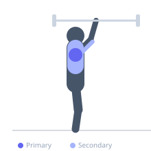

Exercise guide / Behind-the-Neck Press
Behind-the-Neck Press
The behind-the-neck press is an overhead barbell press where the bar is lowered behind the head to the base of the skull rather than in front of the face. This variation places the shoulder joint in a more horizontally abducted position, which some lifters use to target the lateral and posterior deltoids differently. It carries significant shoulder impingement risk for many individuals and requires excellent shoulder mobility and health.
Primary muscles
deltoid anterior
deltoid lateral
Secondary muscles
deltoid posterior
triceps lateral head
triceps medial head
trapezius upper
Stabilizers
supraspinatus
infraspinatus
subscapularis
Equipment
Standard Barbell
Power Rack (Squat Cage)


Starting position
- Sit on a bench inside a rack with a barbell racked behind the head at approximately ear height. Grip the bar slightly wider than shoulder-width. The bar begins at the base of the skull/upper traps.
Setup
- Set the safety pins at a height that catches the bar at the base of the skull if you fail. Requires excellent shoulder external rotation and thoracic mobility. Do not attempt without a spotter.
Steps
- Step 1: Sit under the bar in a rack, gripping it slightly wider than shoulder-width. Unrack the bar to rest on the upper traps behind the neck.
- Step 2: Brace the core and keep the torso upright.
- Step 3: Exhale and press the bar straight overhead to full arm extension.
- Step 4: Inhale and lower the bar back to the base of the skull in a controlled manner.
Coaching cues
- Keep the elbows tracking directly under the bar throughout the movement
- Press the bar in a vertical line — not forward
Breathing
- Exhale on the press; inhale on the return.
Range of motion
- Lower to the base of the skull — not down to the traps — and press to full overhead extension.
Tempo
- 2-0-2-0
Common mistakes
- Letting the neck jut forward during the movement
- Lowering the bar too quickly which stresses the rotator cuff
Safety
- Not recommended for those with shoulder impingement, rotator cuff injuries, or limited external rotation mobility
- Always use a spotter and set safety pins
- If neck or shoulder pain occurs, switch to front overhead press
Training
- strength: 3–6 reps
- hypertrophy: 8–12 reps
- strength: 3–5 sets
- hypertrophy: 3–4 sets
- Rest: {'strength': 180, 'hypertrophy': 90}